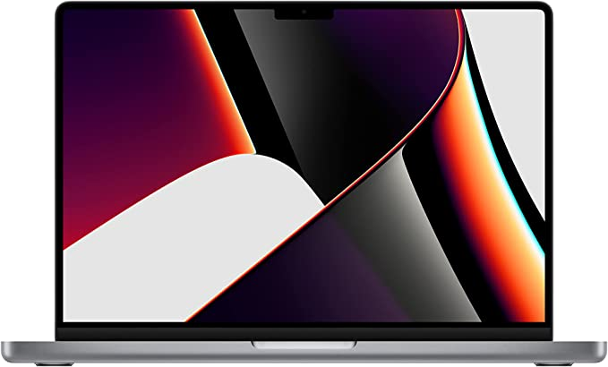

El Macbook Pro con Chip M1 Pro es conocido por todos aquellos que alguna vez han soñado con el Mac ideal, debido a su increíbles rendimientos y fascinante capacidad gráfica para MacOS. Mezcladados con un precio inmejorable, genera mezcla explosiva. Todo esto y más, os lo explicamos en esta reseña.
RAM: 16GB
Disco: 512GB SSD
Chip: M1 Pro (Apple) con 8 núcleos de CPU y 14 de GPU
Resolución: 14 pulgadas
Marca: Apple
Sistema operativo: MacOS
Veloz y hábil: Su Chip M1 Pro ofrece una CPU con 8 núcleos, de los cuales 4 son de rendimiento a 3.2GHz y 4 de eficiencia a 3.2GHz también, potencia que ofrece una comodidad de trabajo pocas veces vista para un Mac.
Gráficos al máximo: Su M1 Pro también incorpora un Chip gráfico integrado cuya frecuencia base (1270MHz) ofrece un procesamiento gráfico más que bueno para un Mac.
Elegancia y ligereza, todo en uno: Es un computador.
Color extremo: Su pantalla Liquid Retina XDR de 14 pulgadas con rango dinámico y relación de contraste extremos, hará que aprecies el color con máximos detalles.
Mucho espacio en disco: Sus 512GB de espacio en disco aportan la capacidad suficiente como almacenar todos los archivos que genere el trabajo diario, el lecer o incluso esos momentos de inspiración con miles de fotos.
Alta velocidad de disco: Al ser un Solid State Disk (SSD), la velocidad de transmisión de archivos es alta, saliéndose de posibles esperas al conectar USB, CD o al guardar archivos como Words, Vídeos o Fotos tras editarlos.
RAM en ingentes cantidades: Sus 16GB de RAM son práctimante infalibles evitando desbordamientos de memoria (y por tanto acelerar los ritmos de trabajo del ordenador) en actividades incluso tan pesadas como la edición de vídeo o el uso de Inteligencia Artificial.
Precio imbatible: Todos sabemos que la marca Apple es cara, y eso no tiene discusión. Pero es la única que soporta su OS (MacOS), por lo que dentro de aquello a lo que podemos aspirar, es accesible y con unas cantidades espectaculares.
Lo cierto es que este ordenador posee MacOS, y suponemos que si buscas un ordenador con este SO es porque sabes manejarlo. Pero es muy probable que aún no sepas sacarle el máximo partido como la mayoría de usuarios. Aquí te dejamos una pequeña ristra de trucos:
Su almacenamiento, su potencia, su elegancia y sus gráficos hacen de esta láptop una opción muy acertada para los fanáticos de Apple.
Aquellos que la prueban lo ven claramente: El MacBook Pro 14 pulgadas con Chip M1 Pro es la MacOS del 2022
Si estás buscando un MacOS para tu casa o tu trabajo un MacBook Pro 14 pulgadas con Chip M1 Pro es, probablemente, tu mejor opción.